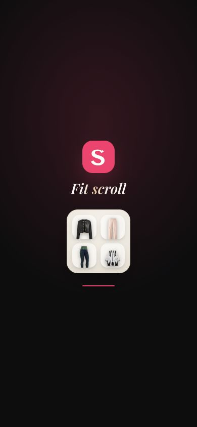
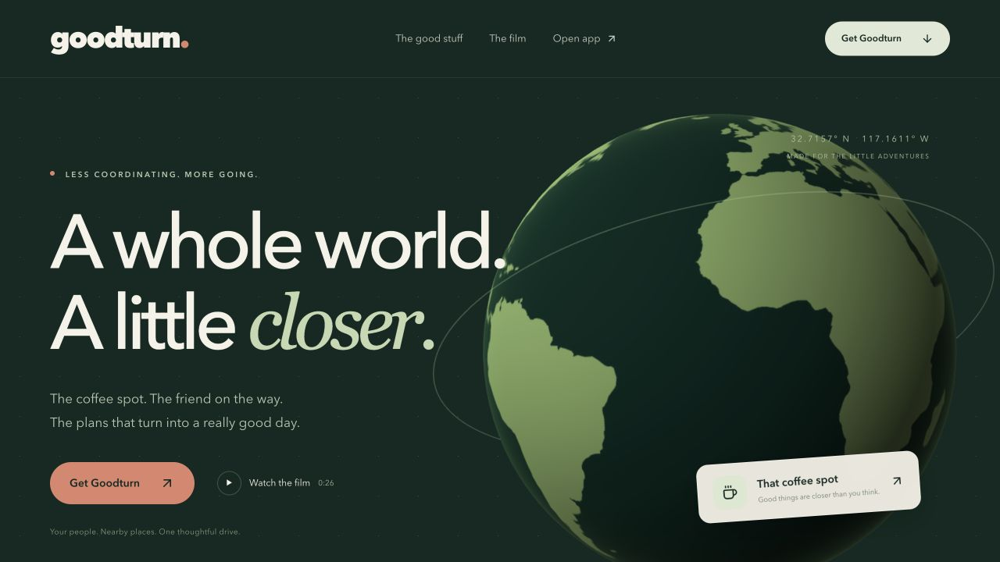

Ideas made
tangible.
Explore by project type, from AI systems to games.
Finished builds and ideas still taking shape, all in one place.
AI & automation
Assistants, agents, and workflows that make AI useful in everyday work.
Odd Jobs Observatory
A read-only work desk for an AI scout that hunts small paid jobs: current activity, opportunities worth a look, and a paper trail from lead to payment.
berts-body / Odysseus integration
An integration experiment using the open-source Odysseus workspace as an interface for the BertOS ecosystem. Upstream work is credited.

BERT AI
A personal AI workspace that brings conversations, project files, terminals, memory, and voice into one place.
roblox-brain
Data pipeline that parses 423+ Roblox place files into queryable JSON catalogs of scripts, assets, and game systems — grown by a scheduled ingest task.
berai — "Claude as the kernel"
An experiment where the AI is the OS: semantic-memory MCP server, scheduled jobs, a watchdog — and a standing eval that removes any component that can't beat raw Claude.
Studio — Roblox game-creation AI
A Roblox development knowledge base and prompting workflow for AI-assisted game planning and Luau implementation.
Overclocking
Prompt-optimization research for Claude Code: a findings catalog with enforced claimed-vs-realistic honesty, a dashboard, and a global hook that compiles every prompt before it runs.
BertOS v1 → v2 → merge
The lineage behind BERT AI: v1 command-center dashboard, a stability-first v2 rebuild, then a documented consolidation merge of the strongest parts of every fork.
BertOS Memory Vault
A shared Obsidian knowledge base that carries project context and decisions between AI tools.
Apps & websites
Product ideas, shopping experiences, and things built for the web.
Bert’s Batteries
Pitch site for a San Diego venue phone-charging network: venues host a station at zero cost and earn a share of every rental.

Sylistly
An AI-assisted fashion discovery experience connecting outfit ideas to shoppable product catalogs.

PULLR
A collector experience built around pack discovery, a cinematic card reveal, and a practice wallet.
Gym Finds / FORGE
A combined gym and fashion shopping experience with a Fit Lab, saved wardrobe, product discovery, and retailer handoff.

Goodturn
An outing-planner prototype exploring place discovery, multi-stop journeys, and a cinematic globe.
Drop Platform
A multi-store commerce prototype with branded storefronts, an order dashboard, and a simulated checkout path.
Bert’s Builds
A game-directory landing page with Roblox project cards and a thumbnail-fetching build script.
VocabHub.io
Paste a vocab list ("el camarero = the waiter") and it powers arcade-style .io mini-games with quiz popups. Studying, gamified.
Lambert Labs — Portfolio v1
An earlier portfolio built around GitHub discovery, curated project overrides, and a committed fallback snapshot.
Games & Roblox
Playable worlds, game systems, and the tools behind them.
Sword Soul
A PC-focused Roblox combat project with distinct weapons, soul progression, and a manga-inspired visual direction.
Bloomwake
A colorful Roblox fishing-fleet game with explorable waters, fitted cannons, collectible fish, and a personal harbor.
Stormlings
A creature-rescue game concept with a local mechanics prototype: rescue, carry, shelter, and return home during storms.
Shoot A Brainrot / Egg Garden
A Roblox game adaptation combining personal egg conveyors, pet gardens, weather mutations, original guns, and boss encounters.
LuckyDice RNG
An early Roblox game workspace and game specification centered on an RNG concept.
HyperShot / Arena FPS
A Roblox arena shooter with a lobby, map selection, training bots, weapon loadouts, and a match-to-lobby loop.
Fort Day
A Roblox free-for-all shooter project designed around quick rounds, respawns, and small-player-count sessions.
First Drop
An original browser battle-royale prototype with a 3D island, bots, loot, building, and a shrinking storm.
Brawl Stars Roblox experiments
A collection of arena-game design and build experiments with research, art direction, and a project catalog.
Temple Run (canvas)
Small endless-runner built as a BertOS toy app — plain JavaScript and canvas served by a tiny local server.
SlimeFlip
A template adaptation with Fusion and Trading systems, architecture notes, and monetization planning. Public-release status needs review.
Slime Workshop
The repair line behind SlimeFlip: V4 → V19 versioned .rbxl builds with per-version patch notes, plus a corpus scan of 1,800+ local place files feeding the master build.
Roblox Flip Scout
A research pipeline for discovering and ranking Roblox template opportunities, with spreadsheet exports and a local dashboard.
Punch Sim — launch ops
A template-game monetization audit and remediation project covering inherited gamepass and product ownership.
Orb Arena
Agar.io-style browser arena — mouse to move, eat orbs, grow. Vanilla JS and canvas, no build step.
Monster Saga
A monster-collecting RPG prototype with a battle engine, encounters, catching, leveling, and evolution.
BrainrotBazaar
Original idle-tycoon/collector: buy creatures that print income, mutate them in a gacha lab, steal prized ones from rivals. World and assets generated fully in code.
Brainrot Dashboard
Trend hunter that gathers evidence on rising Roblox mechanics, writes research reports into the memory vault, and feeds candidates to roblox-brain.
Apollo
A voxel-mining template rebuilt with a cleaner project structure, gameplay changes, and Luau tooling. Publication status needs review.
Creative & media
Experiments in video, storytelling, and AI-assisted production.
Estate Cinema
A cinematic landing-page concept for presenting real-estate listing films.
Cortex Studio
A local creative studio for scene composition, narration, image generation, and comparing revisions through viewer feedback.
humate — 12s spot
A 12-second animated ad spot built entirely in the browser with HTML and CSS, played on click.
Bert Clips
A video-clipping operations project with media-processing and publishing-workflow research.
After Hours
A local AI DJ studio for mixing full tracks, shaping a live set, and recording the result.
Productivity & learning
Practical tools for school, commuting, and getting things done.
Shotgun
Recurring carpool matching for SDSU commuters, organized around campus email, zones, and weekly schedules.
SDSU Study Lab
Lecture-organized notes, practice quizzes, and study tools for economics, statistics, and other SDSU coursework.
SDSU Life
A local-first school dashboard and Chrome extension that brings Canvas deadlines, coursework, and a daily plan together.
Pacer / Human Paste
A clipboard-typing experiment developed toward a Mac menu-bar app with adjustable natural timing.
Mac Breather
A local Mac resource-diagnostics tool focused on memory pressure, background processes, and controlled cleanup.
Trading & research
Market research and paper-only experiments. No investment performance claimed.
bert-trade
An early Python trading-research kit combining a scanner, backtester, strategies, and a dashboard.
Trading Observatory
A bounded trading-research dashboard for collecting evidence, monitoring data coverage, and reviewing candidate signals.
Prop AI Desk / ASTRA
A replay and paper-trading research desk with Strategy Lab, risk gates, and a persistent evidence ledger.
Polymarket Tennis Quant
A tennis probability research system with public market collection, chronological backtests, simulations, and a paper broker.
Pattern Copilot / Paper Lab
A TradingView strategy and separate local simulator for explainable chart signals and auditable paper-trading experiments.
Meme Edge
A local Solana research terminal with explainable watch/reject classifications, chronological simulations, and cost-aware evaluation.
AutoTrader
A trading research workspace comparing cash-only strategies against benchmarks with explicit costs and delayed signals.
polyscout
A Polymarket research and paper-simulation system with an auditable decision log. Current worker activity has not been rechecked.
AI Trader
Paper-first backtesting system for testing trading ideas, using local Ollama models as research assistants. Built to learn, not to gamble.
Experiments
Small explorations and early ideas with room to evolve.
No projects found.
Try another phrase or reset the filters.
Built means an implementation is documented. Prototype and In progress show ideas being explored. A build is not necessarily a public launch.
Each project includes its scope and review date. Public previews are linked where available; research entries describe experiments, not financial results.
Follow the progress ↗